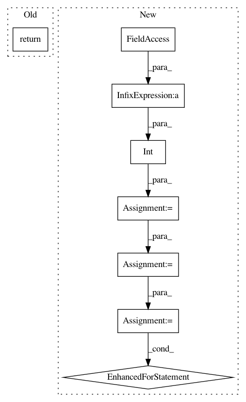

3c382e94cf3a01f73bf96837eb6428b118555569,librosa/core/audio.py,,stream,#,213
Before Change
block_stream = __stream(path, sr, block_length, frame_length, hop_length,
mono, offset, duration, fill_value, dtype)
return block_stream, sr
def __stream(path, sr, block_length, frame_length, hop_length,
mono, offset, duration, fill_value, dtype):
After Change
start = 0
if duration:
frames = int(duration * sr)
else:
frames = -1
blocks = sf.blocks(path,
blocksize=frame_length + (block_length - 1) * hop_length,
overlap=frame_length - hop_length,
fill_value=fill_value,
start=start,
frames=frames,
dtype=dtype,
always_2d=False)
for block in blocks:
if mono:
yield to_mono(block.T)
else:
yield block.T
@cache(level=20)
def to_mono(y):
"""Force an audio signal down to mono.
In pattern: SUPERPATTERN
Frequency: 4
Non-data size: 8
Instances
Project Name: librosa/librosa
Commit Name: 3c382e94cf3a01f73bf96837eb6428b118555569
Time: 2019-05-04
Author: brian.mcfee@nyu.edu
File Name: librosa/core/audio.py
Class Name:
Method Name: stream
Project Name: librosa/librosa
Commit Name: c642d7d1d43a27ee9972d8ade8d4e77e28b5328f
Time: 2015-01-05
Author: brian.mcfee@nyu.edu
File Name: librosa/util.py
Class Name:
Method Name: match_events
Project Name: librosa/librosa
Commit Name: 90780bfa782b6c4fa0cac0cda10210d162fb516d
Time: 2019-06-21
Author: brian.mcfee@nyu.edu
File Name: librosa/core/audio.py
Class Name:
Method Name: stream
Project Name: librosa/librosa
Commit Name: e843dc7c9b240266f411f30d90d05b9e7c81215d
Time: 2015-01-06
Author: brian.mcfee@nyu.edu
File Name: librosa/util.py
Class Name:
Method Name: match_intervals